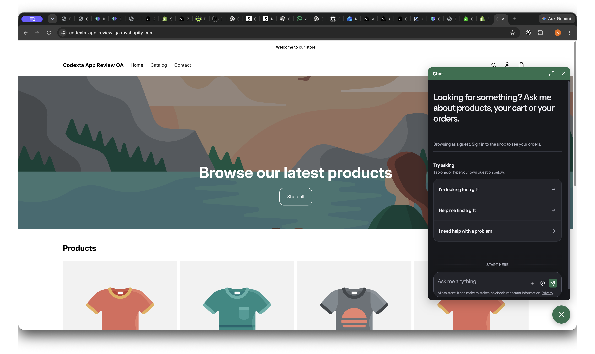
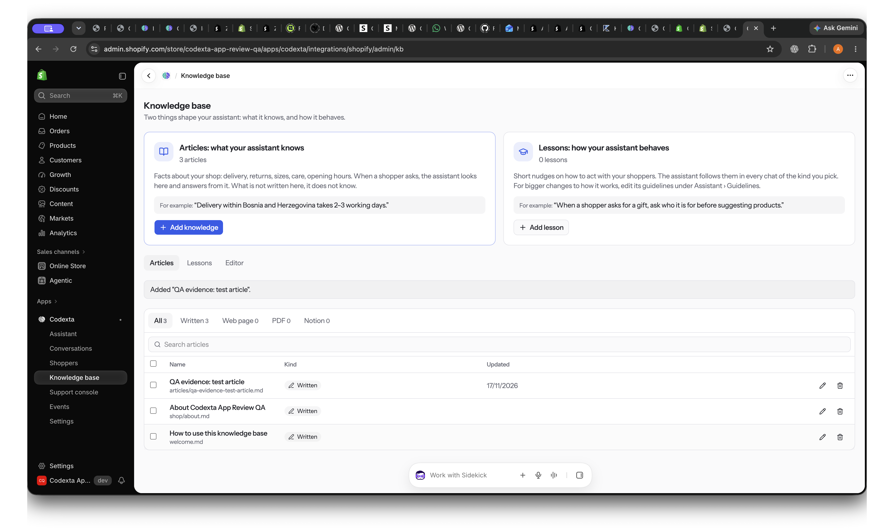

Codexta
Codexta Finding 3 · Critical errors
The storefront widget appears and knowledge saves.
On the QA storefront, the chat panel opened for a guest. In the Shopify admin, a written knowledge article saved and appeared in the article list.
Storefront and knowledge base checks · QA dev store · 17 Nov 2026
Storefront assistant is visible
The screenshot shows the assistant launcher and open chat panel on the QA store’s storefront. It confirms the widget is present; it does not show an assistant response to a shopper message.

Knowledge base article creation succeeded
The app confirmed the test article was added and showed it in the written articles list. This is evidence that the Create action saved successfully during this QA run.
